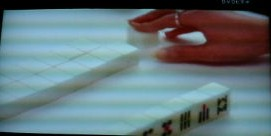
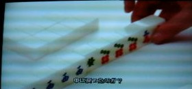
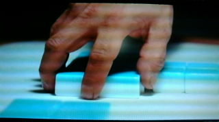
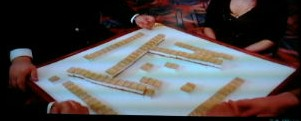
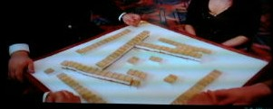
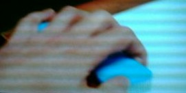
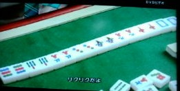
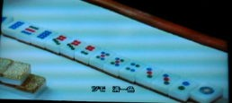

香港映画の「カンフー麻雀」、ハチャメチャ映画であったが、σ(-_-)には大きな収穫がいろいろあった。
その中の一つが、配牌前の山積みの方法。現在では山は２段に積むのが普通となっている。しかし麻
雀が骨牌化した当時は、平らに並べていた。麻雀学の泰斗 秦原茂樹の考察「想定 寧波ルール」でも、
古式砌牌法（チーパイ＝最初に牌を並べる方法）として、「各自が手元に13枚並べ、向う側に21枚づつ
並べる。手元の13枚が配牌となり、21枚が壁牌となる」と述べられている。しかし日本へ麻雀が伝来した
当時（大正末期）、すでに２段積みが普通となっていた。
中国古典麻雀で行われていたという この平積み、想定 寧波ルール以外でも触れられている文章が
あったと記憶しているが、 どの本であったか、はっきり覚えていない（たしか日本麻雀連盟の機関紙「麻
雀タイムス」だったような...）。 いずれにせよ この平積みは、日本では すでに消滅した古式という認識。
ところがカンフー麻雀の中に、この平積みでゲームしているシーンがいくつか登場していた（゜0゜） それも
古式でプレーしてみるという設定ではなく、ストーリーの中で普通に登場していた。異なる場所での麻雀
ゲームで、平積みが解説もナシで登場するということは、ひょっとしたら香港では、平積みがまだ普通に
行われているのかな？ いやぁ もしそうだとすれば、σ(-_-)にとってはシーラカンスにお目にかかったよ
うな....(^-^；
 
平積みからでも配牌は一回に４枚取得する。２段積みなら 親指と中指で山の上下を抑えるようにする
が、平積みでは 親指と中指で両サイドを挟み込むようにする。

もちろん２段積みも普通に登場しているが、この２段積みの山が、完全な井圏式（チンチュワンシー＝井桁式）。
  
日本でも山は井桁式に組むが、どちらかいうと井桁というより正方形に近い。せいぜい左端が少しハミ
出るくらい（最近は自動卓のおかげで、ハミ出しもないくらい）。そこで端が大幅にハミ出た完璧な井桁式
は、逆に「崩れ井桁」と呼んでいた。なんだか目からウロコがボタボタ....(^-^；
次が副露牌の位置。チーポンした牌、日本では右側に置くのが普通。むかし 何かの本で（どの本だか、
はっきりした記憶ナシ....なにせ当時は読むことに夢中で、いちいち記録していなかった....）、「むかしは左側に副露するのが
普通だった」という記述を見た。理由は「利き手（右手）によるイカサマを防止」ということだった。しかし読ん
だ当時、（イカサマ防止とはいえ、ジャマくさいことをやっていたんだな...）と思った。じっさい日本では、右
側副露が普通になっている。そこで平積み同様、左側副露なんて消滅したと思っていた。ところが映画で
は、ほとんど左側副露だった。まるで古式ルー
ルの見本市に出かけたような気がした。

目ウロコな話が、もう一つ。手牌16枚麻雀では、アガリは17枚。17枚では８対子半しか出来ない。そこで
対子系の役はナイと思っていた。そしたら香港の16枚麻雀では八対子があった。香港式の16枚麻雀での
八対子は、７対子と１暗刻。そこでテンパイするまで暗刻が一つもできず、純粋に８対子でテンパイしたら、
八門張となる（台湾16枚麻雀にも、八対子があるかどうかは不明）。この八対子、映画の中ではリクリクと
呼ばれていたが、字がわからない....(ノд｀) さて、どんな字なんだろう....

オマケ
映画の中で四段階（スートワンチー＝スーだんかい）というアガリ役が出てきた（123 345 567 789）。
公式中麻では一色四歩高（いっしょくスープーコー）という名の32点役であるが、実戦では鳴きまくっても出来
ない高難度の組み合わせ（と思われ）。しかしカンフー麻雀なので、門前であっさり出来る(^-^；

この一色四歩高、日本では「大股（おおまた）」と通称されるらしい（123 234 345の形が小股（こまた））、
どうも生々しい名前。また一色四歩高にしても、なんだか長たらしい....σ(-_-)は古名の四段階、あるい
は天野大三氏が名付けた和名 山四順のほうがスキ。
|